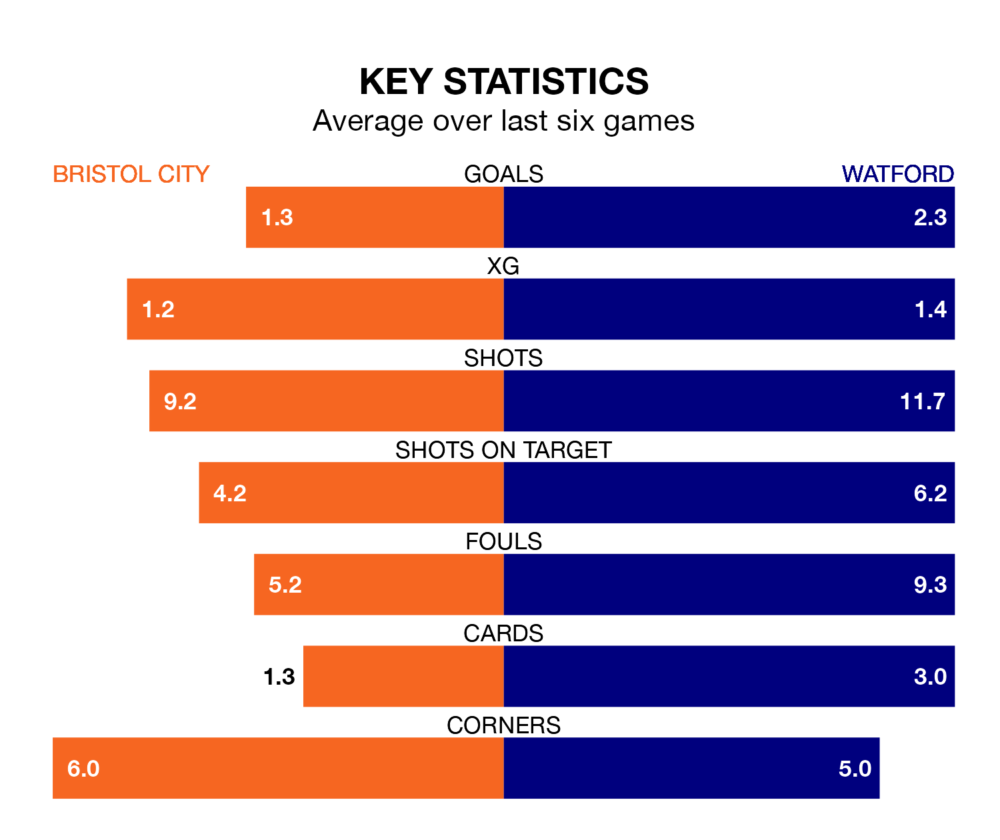

Watford travel to Bristol City on Saturday in EFL Championship.
The visitors come into the game on the back of a win in their last match, having beaten Queens Park Rangers 2-1 away, with goals from Jake Livermore.
The Robins, meanwhile, lost their last match, 2-0 against Preston North End.
With 30 goals in 27 games so far this season, City are scoring at below the league average rate with 1.1 goals per game. But they are conceding fewer than average too, letting in 30 goals at a rate of 1.1 per game.
Watford, meanwhile, are above average scorers, with 1.6 goals per game, compared to a league average of 1.4. They have conceded 1.4 goals per game.
In the last 10 years, City and Watford have played each other on seven occasions. City won two of them, Watford three, and they drew twice.
On average, the Robins scored 1.0 goal and the Hornets 2.0 in those matches.
Their last meeting was on December 26, when City won 4-1 away.
The Hornets are eighth in the table after 27 games, of which they have won 10 and drawn nine, earning 39 points.
The Robins are six places behind the away team in 14th, with 10 wins and six draws putting them on 36 points.
The hosts are in mixed form in EFL Championship, with three wins and a draw from their last six games.
With three wins and two draws over that period, Watford's form is slightly better – they have taken 11 points from 18, compared to City's 10.
Updated: 10:02 (UTC), 19/01/24